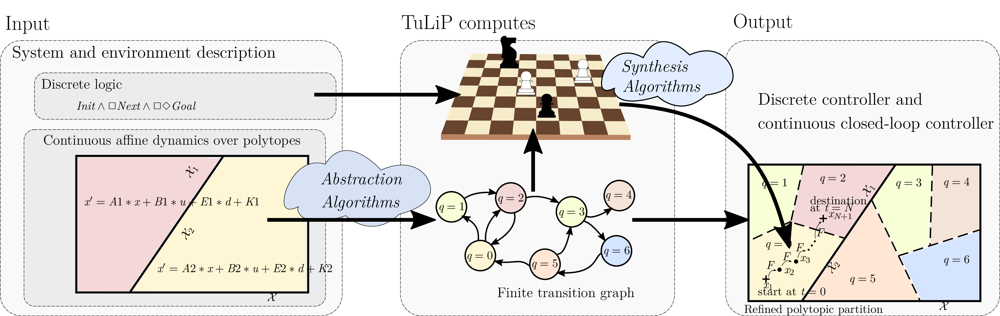
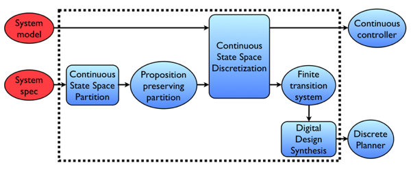

1. Introduction¶
The Temporal Logic Planning (TuLiP) Toolbox is a collection of Python-based code for automatic synthesis of correct-by-construction embedded control software as discussed in [FDLOM16]. This chapter contains a brief overview of the toolbox, along with instructions on how to install the software.
Though installation should be easy (and standardized) through setup.py, there are some dependencies that will need to be manually installed if not already available; details are provided in Installation. Note that this documentation is still under development.
1.1. Package Overview¶
TuLiP is designed to synthesize controllers for hybrid systems that operate in a (potentially dynamic and unknown) environment. TuLiP takes as input a description of the system and environment, which specifies their dynamic behavior, and how the system is required to behave. This description is expressed using:
formulas written in temporal logic, and
difference equations that describe the continuous dynamics over a polytopic partition of the state space.
TuLiP then applies an abstraction algorithm to create a discrete graph from the continuous dynamics. This discrete graph represents how the continuous state can change, from region to region of the state space. In doing so, TuLiP refines the given partition into smaller (polytopic) regions.
The node of the created graph correspond to these new regions, and the arcs of the graph mean that transitioning between the regions that correspond to the endpoints of each arc is possible. In other words, the graph’s arcs represent the feasibility of implementing those transitions with continuous feedback control.
The input of TuLiP can associate labels with specific regions in the state space, in order to mention those regions in the formulas of the specification. These labeled regions too are taken into account when refining the given partition.
In the next step, TuLiP combines the graph obtained from abstracting the continuous dynamics, with the given temporal logic formulas, and applies synthesis algorithms to construct a discrete controller that realizes the given specification, in any environment that satisfies the assumptions that are in the specification.
If such a discrete controller exists, then the discrete synthesis step results in a discrete controller that is then refined into continuous closed-loop controllers, in order to steer the system in a way that satisfies the given specification.
These steps are shown in the next diagram:
The synthesis algorithms can be regarded as solving a game, in that these algorithms find a step-by-step strategy that, when followed, implements the given specification. There are two kinds of properties that a specification can include:
safety: how the system under design is required to change in each time step, provided that the environment satisfies the given assumptions
liveness: what the “eventual” behavior of the system is required to be, assuming the assumptions about the environment are satisfied.
The continuous equations of the dynamics can include also continuous disturbances, for example noise. These external effects are taken into account in the closed-loop implementation of the continuous controller that guides the system to implement the transitions from state to state.
Likewise, the discrete environment behavior can be specified as an assumption, in temporal logic, and thus taken into account when synthesizing a discrete controller. For example, such assumptions can define what protocol the environment uses when communitating with the system.
The approach used by TuLiP is outlined in the figure below:
The procedure that we use is broken down into three primary steps:
Construct a finite transition system
(e.g. a Kripke structure) that serves as an abstract model of
(which typically has infinitely many states)
Synthesize a discrete planner that computes a discrete plan satisfying the specification based on the abstract, finite-state model
Design a continuous controller that implements the discrete plan.
More information on the solution strategy is available in [FDLOM16] and Additional Problem Formulations.
1.2. Version 1.0 Release Notes¶
Version 1.0 of TuLiP represents a major overhaul of the structure of the code to allow better support for integration with other tools and adding functionality. Code and examples for version 0.x of TuLiP are not compatible with version 1.0+ and must be rewritten from scratch.
1.3. Other sources of documentation¶
You are currently reading the User’s Guide. There is also API documentation, which provides details about the various classes, methods, etc. in TuLiP. This can be accessed using the standard pydoc tool. E.g.,
pydoc tulip
The API documentation is also available through a richer interface that
includes, among other things, hyperlinks and inheritance diagrams. It is
generated using Epydoc and can be built from
the doc directory in the TuLiP sources:
make api
Built copies for the most recent release of TuLiP are available online at:
1.4. Getting help¶
Visit the #tulip-control channel of the freenode IRC network.
Contact project members at tulip@tulip-control.org.
Possible bug reports and feature requests can be made by opening an issue on the project site at GitHub